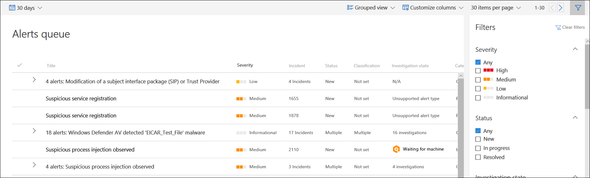
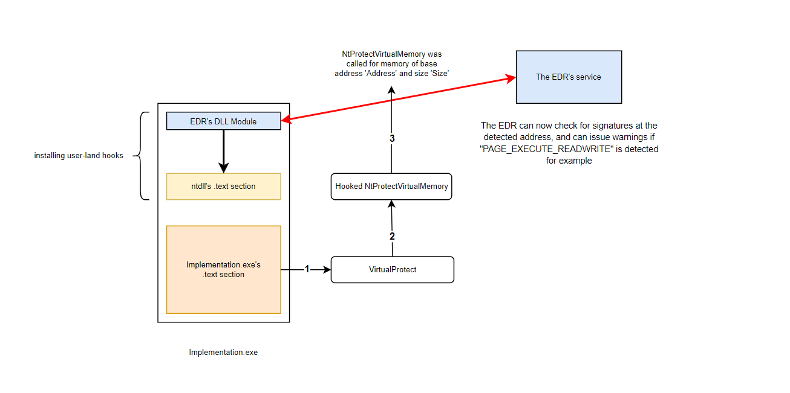
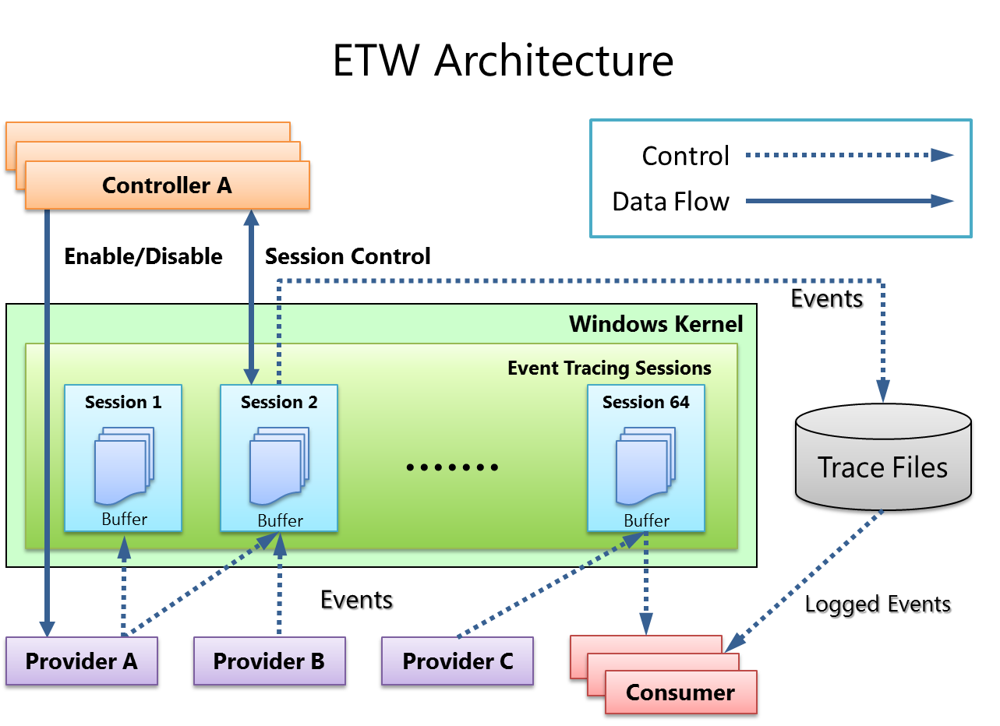
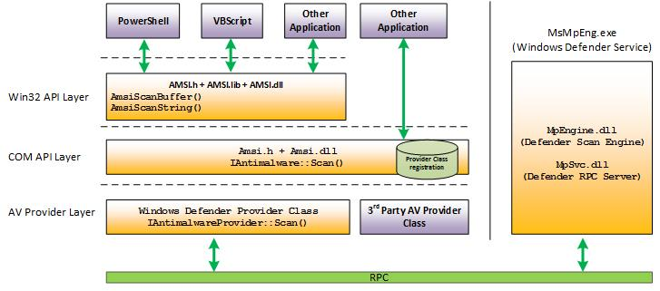
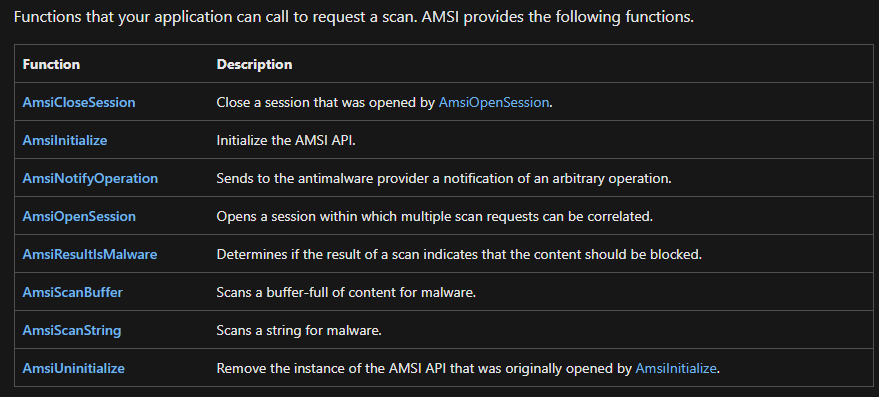
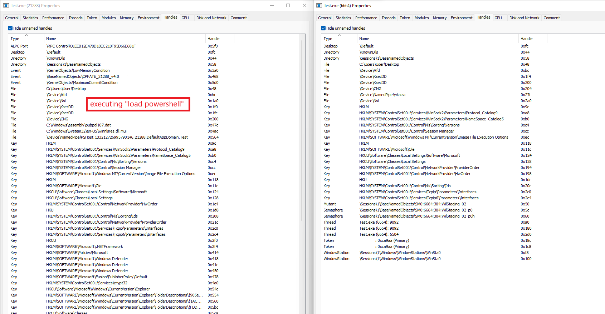

Introduction
Endpoint Detection and Response (EDR) is a security solution that detects and responds to threats like ransomware and malware. It works by continuously monitoring endpoints for suspicious activity by collecting data on events such as system logs, network traffic, interprocess communications (IPCs), RPC calls, authentication attempts, and user activity.
EDRs will collect data when installed on endpoints and then analyze and correlate them to identify potential threats. When a threat is detected, EDR solutions can automatically respond by containing and isolating the affected endpoint from the network or by taking other predefined actions such as deleting malicious files or terminating suspicious processes.
Additionally, EDRs will run programs in sandboxes when executed and then continue to monitor them while they are running in search of malicious behavior.
EDRs should be used as a part of a larger cyber security strategy and used alongside other solutions such as firewalls, intrusion detection systems (IDS), intrusion prevention systems (IPS), and security information and event management (SIEM) solutions. Blue teamers also use EDR logs to perform threat hunting and search for IoCs that could have potentially been missed by the solution.
How EDRs Work
An EDR agent typically consists of two parts: a user-mode application and a kernel-mode driver. These parts gather information using the variety of methods mentioned earlier. The collected data is then analyzed and matched against signatures and malicious behavior. Upon detecting malicious or suspicious behavior, the EDR will log the finding in the security dashboard. EDR settings are highly customizable and depending on its settings, it may either take an action on its own or simply provide an alert. Below is an image from one of Microsoft's articles showing the security dashboard for Microsoft Defender For Endpoint with a few alerts.

Signature Detection
Recall that antiviruses are generally limited to basic signature detection and can be easily bypassed. Although an EDR is far more complex and contains more functionality, it does incorporate AV features to detect known malware. Furthermore, defenders can expand their EDR detection capabilities by creating custom rules.
Detection Based on Behavior
Behavior and runtime detection are one of the main features of an EDR. It can monitor running processes using several methods which are mentioned below.
Userland Hooking
EDRs utilize userland hooking to detect malicious arguments passed to functions as well as see payloads after their decryption. Userland hooking was previously explained in the Syscalls - Userland Hooking module. The image below further illustrates userland hooking in action.

Event Tracing for Windows (ETW)
ETW or Event Tracing for Windows is a kernel mode mechanism built into the Windows operating system that tracks and records events that are triggered by drivers and user-mode applications on the current system.
The following image is from Microsoft's Instrumenting Your Code with ETW article, which shows the ETW architecture.

ETW can log events like process creation and termination, device driver loading and unloading, file and registry access, and user input events. It can also capture network events by logging established connections and authentication requests.
EDRs can utilize this built-in mechanism to further enhance their ability in collecting information about a specific endpoint. On the other hand, several tools also utilize ETW such as Sysmon and Procmon.
Bypassing ETW will be discussed in future modules.
Antimalware Scan Interface (AMSI)
AMSI or Antimalware Scan Interface is another security mechanism built into the Windows OS starting from Windows 10. It allows third-party software to integrate with it and scan and detect malicious applications.
The following image is from Microsoft's How the Antimalware Scan Interface (AMSI) helps you defend against malware article in which AMSI's architecture is visualized.

Through the use of AMSI, security software is capable of examining scripts, code, and .NET assemblies being executed and injected dynamically, such as those written in JavaScript, VBScript, PowerShell, or other scripting languages. Additionally, AMSI can scan .NET assemblies, which are programs built with Microsoft's .NET framework and programmed in C# and VB.NET.
AMSI is utilized through a group of APIs that are categorized by Microsoft as follows:

The core implementation of the AMSI API is provided by amsi.dll which is the main DLL that AMSI uses to carry out its operations (reference the above-mentioned functions). The operating system's security subsystem and third-party security products that integrate with AMSI are two other sets of DLLs that are used by AMSI.
Memory-Based Detection
Memory-based detections refer to the IoCs and signatures that are generated after executing your payload and are often created by it. These IoCs can be heap allocations, trampolines when hooking APIs, thread stacks, and RWX memory sections.
Bypassing such measures take place post-execution as the payload is running where adjustments can be made to the payload's layout in memory. Memory-based detection is an advanced concept and is one of the most effective ways to detect malicious code execution.
Bypassing memory-based detections will be covered in future modules.
Kernel CallBacks and Minifilter Drivers
Kernel callbacks are a mechanism used in the Windows OS to allow kernel-mode code to register functions to be called by the OS at specific times or when an event occurs. Some example events are file creation, registry key modification, and a DLL being loaded.
When the event takes place, the OS will call the registered callback function and notify the kernel-mode code that it occurred. This "kernel-mode code" can be a device driver that is created by security products, which in this case is an EDR.
It is worth noting that poorly written or misconfigured callbacks can cause system instability, performance issues, or even security vulnerabilities therefore this isn't a method used by all EDR vendors.
Some example callbacks are listed below.
To intercept, examine, and potentially block I/O events, Microsoft advises security vendors to use minifilter drivers. Minifilter drivers are used in the Windows OS to intercept and modify I/O requests between applications and the file system. These drivers operate at a layer between the file system and the device driver that handles the physical I/O requests. EDRs can utilize minifilter drivers to register a callback for each I/O operation which will notify the driver of specific actions, such as process creation, registry modification, etc.
Additionally, kernel callbacks can be registered by the EDR's Minifilter component in order to get unmodified data directly from the kernel, instead of having data coming from user-land resources, since these can be tampered with and modified.
An example of how EDRs could use minifilter drivers and kernel callbacks is by calling PspCreateProcessNotifyRoutine to trigger the EDR to load its user-mode DLL into the created processes, in which it can perform system call hooking, and then using the minifilter driver functionality to monitor I/O file system requests by this newly created process.
Network IoCs
Processes that establish network connections possess a higher degree of suspicion due to the possibility of the connection being to an attacker-controlled C&C server. Network connections will be monitored by EDRs and an alert will be triggered when a process that would not normally use a network connection begins doing so. For example, if process injection was done on notepad.exe and it began reaching out to the internet this is considered highly suspicious. Furthermore, aspects of the network connection are analyzed such as the target IP address, domain name, port number and network traffic.
Bypassing EDRs
Bypassing EDRs can be difficult to pull off at first and requires a group of methods and techniques instead of relying on a single approach. The reason multiple methods are required is that EDRs use more than one technique to monitor the process. For example, unhooking doesn't block ETWs events but will solve the userland hooking problem. Sometimes multiple implementations will be required to solve the same problem (this will be demonstrated in the NTDLL unhooking modules).
It is important to bear in mind that some EDR bypass techniques allow the loader to evade detection but not the C&C payload in use. This can be the case due to several reasons:
whoami command).
For such reasons, and more, there would be a lot of cases where your implementation would succeed in returning a connection to your C2 server, but would get detected when running some specific commands. So choosing your C2 is an important decision for runtime evasion. It is always advised to use a highly flexible and malleable C2 framework rather than a limited one.
In the following modules, multiple strategies will be presented to address EDR detection mechanisms. One may select the method that best fits their needs and combine it with other previously shown techniques to create successful implementations that can bypass EDR solutions.